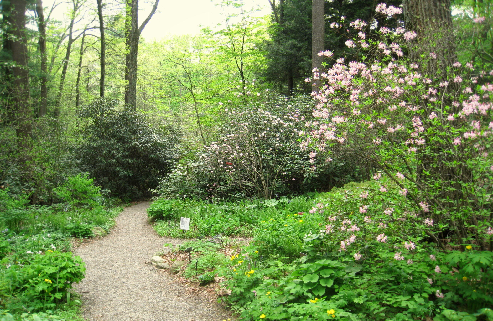
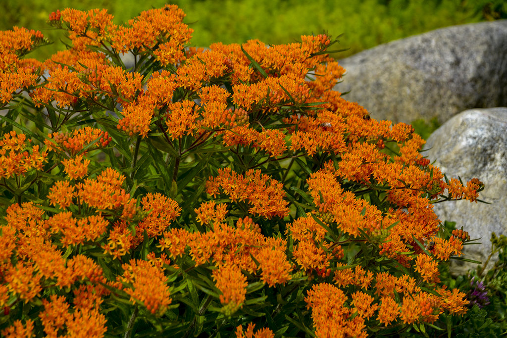

Welcome to the Pennsylvania Native Plant Botanical Garden! Our garden is dedicated to showcasing the beauty and diversity of native plants found in Pennsylvania. We believe that native plants play a crucial role in maintaining healthy ecosystems, supporting local wildlife, and preserving our natural heritage.
Our garden features a wide variety of native plants, including wildflowers, shrubs, and trees. Each plant is carefully selected for its ecological value, aesthetic appeal, and adaptability to the local climate. Visitors can explore our garden through well-maintained walking paths, informative signage, and guided tours led by knowledgeable staff.
Kinds of native plants we feature
Butterfly Weed (Asclepias tuberosa)
Asclepias tuberosa, commonly known as butterfly weed or pleurisy root, is a species of milkweed native to eastern and southwestern North America. It is commonly known as butterfly weed because of the butterflies that are attracted to the plant by its color and its copious production of nectar.
